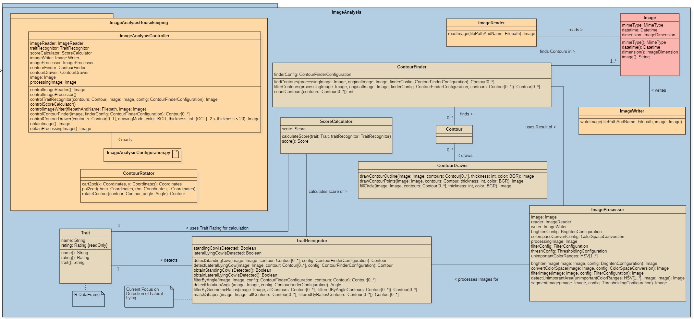
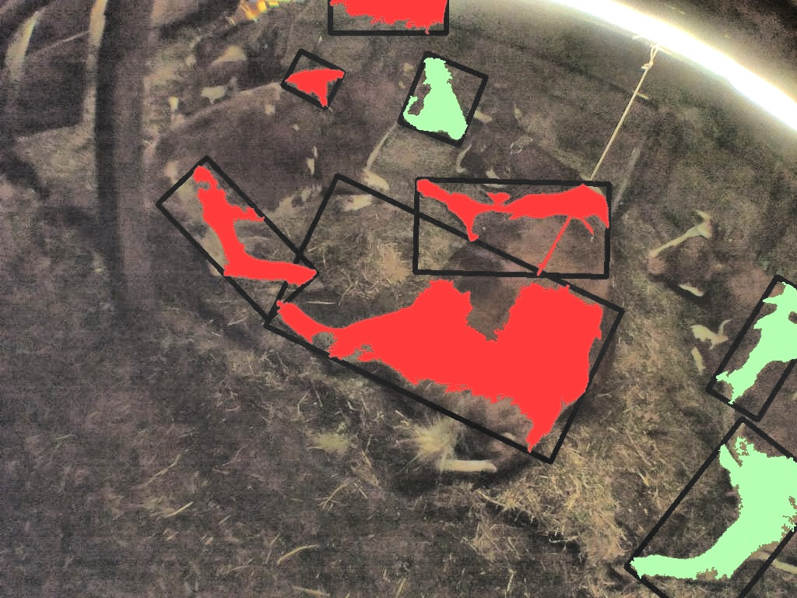
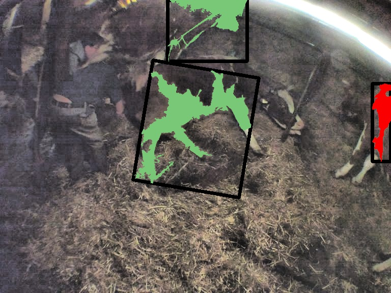
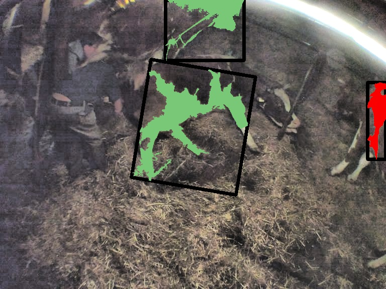

Automatische Analyse von Kamerabildern zur Prognose des Geburtszeitpunkts von Kälbern
Dominique Müller
Präsentation Bachelor Thesis
Inhalt
- No order here
- Or here
- Or here
- Or here
Ausgangslage und Motivation
"Schwere" Geburten: wirtschaftliche Konsequenzen und Beinträchtigung des Wohlergehens der Tiere
Case-Arbeit als Basis für Bachelor-Arbeit

Optimales Management

Bereits entwickelte Produkte
- Neigungs- und Beschleunigungssensoren für Erkennung von Schwanzhebung und Verhaltensänderungen
- Wiederkäuersensoren
- Intelligente Bauchgürtel
- Intravaginale Sensoren
- Kritik: Geringe Anzahl Parameter, oftmals Fokus auf Rasse Holstein, technische Vorrichtungen an Kuh sind leicht zerstörbar
Ziele
- Aufwand für die Überwachung des Geburtsverlaufs reduzieren
- Automatische Analyse von Kamerabildern
- Arbeit Basis von geometrischen Mustern und visuellen Merkmalen.
- Sichere Entfernung zu den Tieren
Methodisches Vorgehen
- Domänenanalyse zur Gewinnung von Expertenwissen
- Domain Driven Design
- Bewährte Methoden des Software Engineerings
Domänenanalyse

Lösung

Umsetzung: Überblick
Umsetzung: Binärbild

Lampe und Holz weiss
Umsetzung: Unwichtige Bereiche
Lampe und Holz weiss
- findContours()
- drawContours()
- boundingRect()
- minEnclosingCircle()
Umsetzung: Winkel
- Winkel der Lampe im Originalbild messen
- Winkel bereinigen
- bereinigter Winkel im Wertebereich [70°; 110°]

nach Winkel gefiltertert
Umsetzung: Extent

Nach Winkel und Extent gefiltert
Umsetzung: Aspect Ratio
Nach Winkel und Extent gefiltert

Nach Winkel, Extent und Aspect Ratio gefiltert
Resultate
Resultate
Resultate
- Domänenanlyse
- Modellierung und Identifikation von Geburtsmerkmalen
- Entwicklung
Ausblick
Vorstufe zu einem auf Machine-Learning-Algorithmen basierenden System im Supervised-Learning-Modus
Fragen?
Vielen Dank für Ihre Aufmerksamkeit!


 
